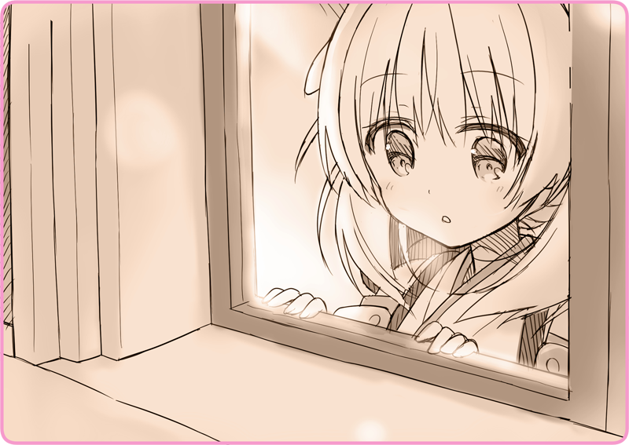

Câu chuyện này diễn ra ít lâu trước khi quán Mèo Đen mở cửa.
Cộng hòa Altaria là một đất nước có bề dày lịch sử tọa lạc ở phía tây Đại lục. Sau khi vượt eo biển, ta có thể thấy được vùng hoang mạc của Seville Nova, và nếu khởi hành từ đây bằng đường sắt sau khoảng ba ngày ba đêm, một đảo quốc nhỏ sẽ dần hiện ra.
Hoàng Quốc Phương Đông… đã khoảng vài chục năm trôi qua kể từ khi đất nước này xâm chiếm Altaria. Từ một sự biến nhỏ như đốm lửa nhen nhóm, chỉ trong nháy mắt đã châm ngòi cho cuộc can qua.
Hoàng Quốc không trực tiếp thôn tính Altaria, đất nước đã sớm phải giương cờ trắng. Tham vọng của Hoàng Quốc còn hơn cả thế—— Bởi trên Đại lục còn tồn tại quốc gia lớn nhất, Đế chế Lobelia. Với đường biên giới trải dài tiếp giáp Lobelia, Altaria trở thành địa điểm lý tưởng để đồn trú quân nơi tiền tuyến. Chính quyền nước cộng hòa trở thành con rối cho Hoàng Quốc, và chẳng biết tự lúc nào, binh sĩ của họ đã đóng quân tại Altaria như một lẽ hiển nhiên. Sau vô số những cuộc xung đột và bạo loạn, người dân Hoàng Quốc và Altaria dần hình thành một mối quan hệ căng thẳng…
＊ ＊ ＊
Bầu trời đêm như bị chôn vùi trong giá lạnh buốt da buốt thịt.
Luồng gió thổi qua những rặng núi phía đông cuốn lên hoa tuyết như làn khói. Cái lạnh tê tái vẫn tiếp tục châm chích, tấn công cho dù ta có độn áo khoác lên tận cổ hay trùm mũ kín đầu. Bụi tuyết sẽ bám lên áo lông, chảy ra và dính mãi không rời.
Dù vậy, để đón chào năm mới, người người vẫn cứ đổ xô ra ngoài đường. Levaljak, thủ đô của Altaria, đang ngập tràn trong bầu không khí lễ hội, cùng những hơi thở trắng xóa. Nương theo ánh đèn lồng hư ảo, họ hồ hởi diễu hành tới Nhà thờ Thượng phụ. Tuy nhiên, vì quảng trường thánh ca đã bị lấp đầy bởi hàng trăm nghìn người, nên từ giờ sẽ rất khó để vào được bên trong.
Lilia: “Xin lỗi, cho cháu qua với ạ.”Lilia cao giọng xin phép, tay vẫn đẩy chiếc xe lăn. Tuyết đã bám đầy lên bánh xe và cô không thể di chuyển đúng theo ý muốn được. Chẳng màng bận tâm tới những ánh mắt hiếu kỳ xung quanh, cô tiếp tục lách qua những kẽ hở trong dòng người mà tiến lên. Trên chiếc xe lăn là một cô bé có vẻ ngoài còn nhỏ nhắn hơn cả Lilia. Cô bé quấn chiếc khăn quàng cổ thành nhiều lớp và đội chiếc mũ da thuộc xuống thấp hơn cả mắt. Trên vai cô bé chất lên cơ man nào là tuyết.
Lilia cao giọng xin phép, tay vẫn đẩy chiếc xe lăn. Tuyết đã bám đầy lên bánh xe và cô không thể di chuyển đúng theo ý muốn được. Chẳng màng bận tâm tới những ánh mắt hiếu kỳ xung quanh, cô tiếp tục lách qua những kẽ hở trong dòng người mà tiến lên. Trên chiếc xe lăn là một cô bé có vẻ ngoài còn nhỏ nhắn hơn cả Lilia. Cô bé quấn chiếc khăn quàng cổ thành nhiều lớp và đội chiếc mũ da thuộc xuống thấp hơn cả mắt. Trên vai cô bé chất lên cơ man nào là tuyết.
Những người qua đường đột nhiên dừng bước và hét lên đầy phấn khích. Chỉ nháy mắt sau cô đã có thể nghe thấy âm thanh một thứ gì đó bay vụt lên bầu trời đêm. Ánh sáng sắc tía nhanh chóng bao trọn không gian xung quanh với một tiếng Bùm. Là pháo hoa. Pháo vừa tắt, đó đây rộ lên những câu chúc tụng mừng năm mới. Lần thứ hai, rồi lần thứ ba… pháo hoa cứ thế nối tiếp nhau, và những tiếng hoan hô cũng theo đó mà vang vọng. Đã thế này rồi thì diễu hành để mà làm gì.
Giờ đây chẳng còn ai để ý tới Lilia nữa. Cô nắm chặt lấy tay cầm chiếc xe lăn, lặng lẽ rời đoàn người và hướng tới chỗ đường tắt.
Cảnh binh: “Cháu bé, cháu bị gì sao?”
Nghe tiếng gọi, cô giật nảy mình. Phía sau cô là một viên cảnh binh với bộ râu kẽm. Ông ta vận áo khoác xám dày cộp khiến cô liên tưởng tới một hòn đá. Bên hông ông còn giắt một khẩu súng nhỏ.
Lilia: “Em gái cháu, cảm thấy không khỏe nên…”
Cảnh binh: “Chà, có chết không chứ. Để bác đưa mấy đứa đến chỗ ấm hơn.”
Lilia: “Để em ấy nghỉ ngơi một chút là được rồi ạ.”
Cảnh binh: “Không phải khách khí đâu. Cháu em gái thấy sao rồi?”
Viên cảnh binh khuỵu xuống và nhìn vào cô bé ngồi trên xe lăn. Trời tối nên ông không nhìn rõ biểu cảm của cô bé cho lắm, nhưng ông vẫn thấy những sợi tóc vàng lộ ra khỏi vành mũ, và tư thế cúi đầu thả lỏng như sợi chỉ đứt dây của cô bé.
Đột ngột, bầu trời đêm bừng sáng, pháo hoa một lần nữa bung tỏa. Khoảnh khắc ấy, viên cảnh binh đã nhòm được khuôn mặt trông nghiêng của cô bé kia. Mi mắt khẽ nhắm, bờ má mịn màng. Ông không thể suy ra được sắc thái gì từ gương mặt ấy…
Cảnh binh: “... Hình nhân?”
Lilia: “Em ấy chỉ đang ngủ thôi ạ. Cảm ơn bác rất nhiều, nhưng chúng cháu xin phép ạ…”
Lilia nói một tràng và vội vã đẩy tiếp chiếc xe lăn.
Cảnh binh: “A, chờ đã cháu!”
Như để chối bỏ tiếng gọi cản kia, cô nhanh chân chạy vào trong ngõ hẻm tối tăm.
Pháo hoa nối tiếp bắn lên, khán giả ở dưới liên tục cao giọng hưng phấn. Viên cảnh binh không đuổi theo liền. Giờ cô phải chuồn ngay lập tức. Có thể ông ta đang gọi tiếp viện. Cô phải nhanh trốn vào đâu đó. Nhưng, đâu mới được? Phố xá quanh đây vắng lặng như tờ, bởi nhà nào cũng cửa đóng then cài hết rồi.
Lilia: “... a.
Cô chợt thấy một luồng ánh sáng ấm áp.
Ấy là một ngôi nhà nhỏ gọn bằng đá có tường sơn màu đỏ chói. Ánh sáng ấm áp kia phát ra từ chiếc đèn lồng ở tầng hai. Đứng bên cửa sổ trên đó là bóng hình của một cô gái.

Đôi mắt màu lưu ly kia nhìn thẳng vào Lilia.
Cô bé thoáng nghiêng đầu, khiến mái tóc anh đào bạc màu của em khẽ lay động theo.
＊ ＊ ＊
Cô bé với mái tóc anh đào bạc màu mỉm cười, một nụ cười không bợn chút hoài nghi.
Nhiệt độ lò sưởi cũng chỉ ở mức vừa tầm, nhưng so với tiết trời ngoài kia thì nơi đây đúng là thiên đường.
Mỗi lần mang củi tới, em lại ném vào trong lò sưởi hết que này tới que khác.
Cho vào nhiều như vậy liệu có cháy hết được không ta? — Lilia thầm nghĩ. Khi đưa tay lên lau mặt, cô nhận ra phần đầu mũi mình đã bị mồ hóng làm cho đen kịt.
Bộ y phục em đang mặc có họa tiết vô cùng độc đáo, loại trang phục điển hình của người phương Đông. Sau lưng em đeo một chiếc cặp màu xám chẳng ăn nhập với vóc dáng chút nào. Nhô lên khỏi chiếc cặp là một ống khói đang nhả ra làn hơi nước mỏng.
“Cảm ơn cậu. Ừm…”
Lilia kéo chiếc mũ trùm ẩm nước của mình xuống. Mái tóc vàng thắt nút của cô tung bay như vừa được giải thoát khỏi sự tù túng.
“Cậu, có khi nào là… Hình nhân?”
Và rồi, cô hỏi một điều đã khiến mình lấn cấn trong lòng ngay từ khi bước vào căn phòng này.
Em đáp, hoàn toàn vô tư.
“Haizakura… Tớ là Lilia.”
Ngay trước Lilia là một chiếc xe lăn. Haizakura quỳ xuống quan sát khuôn mặt cô bé ngồi trên đó. Từ đầu tới giờ, cô bé giữ nguyên tư thế cúi đầu xuống, thả lỏng như một sợi chỉ bị cắt đứt.
“Con bé là một Hình nhân.”
“Là Hình nhân Ca kịch.”
“Là Hình nhân giải trí cho con người trên sân khấu ấy. Nếu đặt điện văn mệnh lệnh vào từ trước, con bé có thể nhảy múa đẹp tới mức con người chẳng tài nào bắt chước được, và hát hay đến độ máy hát cũng phải chào thua.”
Bỗng, em nghiêng đầu bối rối.
“Xin lỗi, Haizakura. Tớ nói dối đấy.”
Rằng cô đến lễ hội năm mới này và bị lạc khỏi gia đình.
Rằng em gái cô bị bệnh, nên đứng mãi dưới trời lạnh thế này là không tốt cho em ấy.
Vì thế, chỉ một lúc thôi, cô muốn được trú chân trong ngôi nhà này.
Với chừng ấy cớ, cô đã vào được căn phòng ấm áp này đây.
Song, tất cả đều chỉ là hú họa.
“Tớ là thành viên Đoàn ca kịch nữ Levaljak. Tớ đã bỏ chạy cùng con bé này.”
Ầm ầm ầm!
Bất thình lình có ai đó đập cửa đầy thô bạo, khiến Lilia thấy tim mình thắt lại.
[Làm phiền lúc đêm muộn! Chúng tôi là cảnh sát! Tiến sĩ Tohma có nhà không?!]
Một giọng khản đặc cất lên.
Loáng thoáng cô còn nghe thấy tiếng kim loại, có khi là phụ tùng của một khẩu súng trường.
Haizakura đâm hoảng, không biết nên làm gì.
“Xin cậu, bảo họ là tớ không có ở đây đi…”
Lilia vội nắm chặt lấy bàn tay bé nhỏ của Haizakura, buông lời khẩn cầu.
Cô liếc về phía Hình nhân đang ngồi trên xe lăn kia.
Cô phải khiến Haizakura hợp tác. Nhưng làm thế nào? Có lẽ nếu cô khơi dậy lương tâm của cô bé Hình nhân dạng thiếu nữ ngây thơ không vương chút tà niệm này…
“Con bé sẽ bị trưng dụng, rồi sẽ bị đem ra chiến trường mất…”
Cô cố gắng nói thật khẽ để bên ngoài không nghe thấy, nhưng trong đó vẫn chứa đựng sự khẩn thiết.
“Con bé là bạn của tớ, tớ không muốn bị chia cắt nên… tớ đã bỏ chạy.”
Quả thật, lời cầu xin của Lilia đã chạm tới Haizakura.
Haizakura nắm chặt lấy cả hai tay của Lilia.
Dẫu có hơi bẩn do mồ hóng, nhưng đôi tay ấy vẫn thật ấm áp.
Em thở mạnh một hơi và gật đầu thật lực.


 “... Myu?”
“... Myu?”